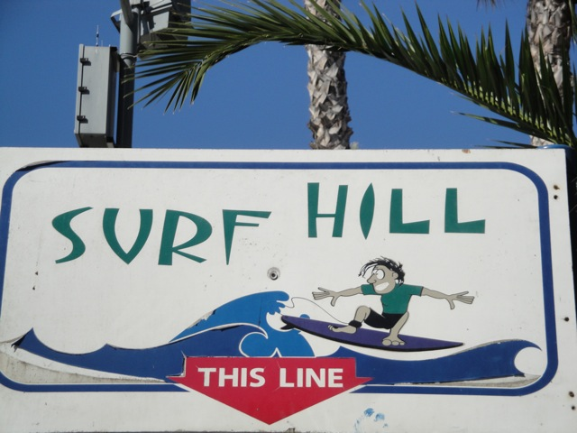
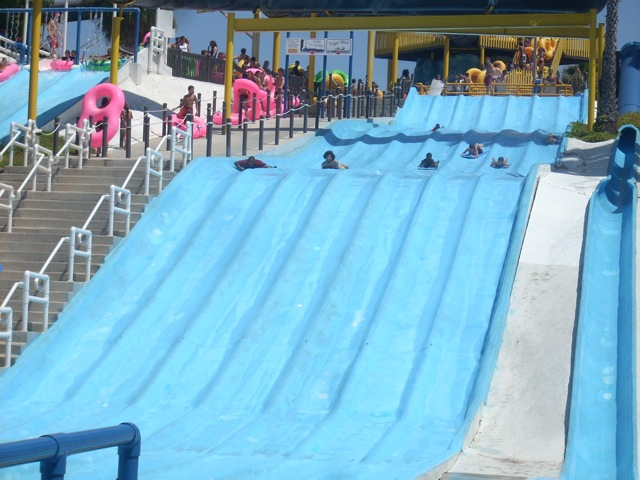

| |

Surf Hill Review
For this review, we're going to travel back in time to 2011, which was my last visit to Wild Rivers. For this Wild Rivers Review, we'll be reviewing Surf Hill. Surf Hill is basically Wild Rivers version of a racing water slide. Because unlike Raging Waters, Wild Rivers had the ability to have an old school tube chute AND a racing water slide in the same park. Now Surf Hill is different from a normal racing waterslide. For one thing, it is made of rubber like most of the other Wild Rivers Slides. Second, the mats on Surf Hill have no handles and no upward thing to prevent you from flying off the mat. The combonation of these things make for a VERY interesting racing slide. Plus I'm pretty sure that Surf Hill is a lot bigger than Bamboo Racer. So that's another plus. When the lifeguard says go, you go. On Surf Hill, your start REALLY matters as to whether you will win or not. If you can properly get your mat going, then you would really get a good start and fly down the hills. And when you reach the bottom, your mat stops, but you keep on going, which really makes for an awesome ride. However, many kids don't have that experience. Some kids end up valleying on the straight part after the first hump. This one kid after valleying ended up pushing himself along the straight part to the second hump. After eventually making it to the second hump, he ended up vallying AGAIN and repeated the pushing process all the way to the final drop. While I don't intensely miss it, I did like it and would definetly like more rides on it. It was quirky and a lot of fun.
8/10
Location: Wild Rivers
Opened: I honestly don't know
Built by: I honestly don't know.
Last Ridden: July 18, 2011
Surf Hill Photos





|